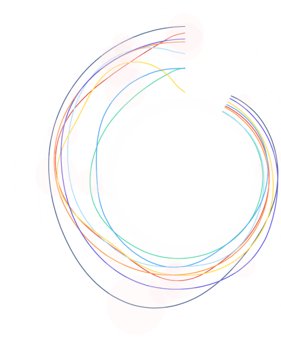
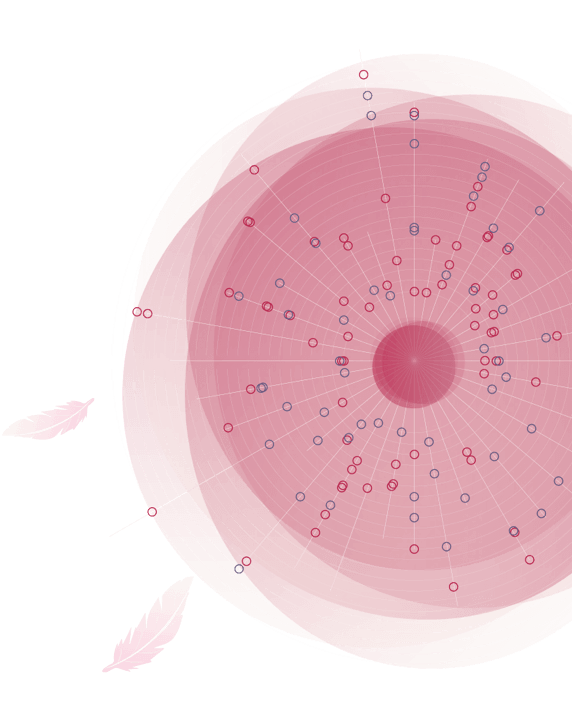

 

AA建筑学院至今已有160多年的历史，在全世界50个国家有著名的校友。本作品是基于维基百科上关于建筑协会建筑学院的官方条目，显示了从1890年至今125位杰出毕业生的官方信息，并在建筑师之间的关系和作品简介方面进行了深入探索。

柯布西耶是20世纪最重要的建筑师之一，是功能主义建筑界的泰斗。作品通过不同角度的视图来定位柯布西耶的建筑作品在全球的分布。从三维地图、平面图和经纬度坐标轴三个视角来定位柯布西耶建筑作品的分布，并对作品进行解析。

本作品选择了获奖数量最多的SOM建筑事务所进行研究，通过分类和重组创造出了适用于其他建筑事务所的信息检索网站，可供社会各界对建筑感兴趣的人进行查询和获取信息。比起目无章法的百度或者随意的搜索，根据需求来选择工具，有系统的搜索资料效率更高。

汉魏六朝作为中国民族思想融合的特殊时期，在历史与文化的融合过程中，留下了大量的碑刻文献作品。碑刻是中华上下五千年历史文化中的一朵瑰宝。此作品对汉魏六朝的石刻数量、朝代、分类以及出土地进行可视化呈现，希望以此使观阅者感受到这一不可再生的文化资源的历史魅力。

毕加索作为“人类艺术史上罕见的艺术天才”，一生致力于艺术创作。本作品将从时期、风格、系列主题和颜色四个方面对毕加索近一千幅作品进行探索。让人们记住在那个科学和文学爆炸的二十世纪初，除了爱因斯坦的相对论，达尔文的进化论，弗洛伊德的精神分析学....其中，还有立体主义，和一个叫毕加索的青年。

通过交互来探索信息更多的维度，用户可以从数据中窥探到生育率的变化与人口结构、人口数量、人均GDP的关系。同时，把生育率与社会与个人的关系表达出来，体现在大时代的背景下，个体受到的社会、市场、政策的影响。

希望通过交互突破传统图表的局限性，从感性的角度出发探索不可触摸的梦境，消除信息可视化的具象边界，呈现一个偏向客观的、梦幻的、模糊的互动界面。作品内容分为梦的产生、梦的种类、梦的连结三个板块，用户每日上传梦境，将其作为一个记忆容器。

通过交互的方式，很好的反映出每个同学之间的交互行为，有线上线下两种交互方式。通过关系网的方式能够清晰的看到每个人与同学之间的交互方式和次数，很直观的看出他们的互动，并且让我们了解了他们的活动和彼此之间的关系。

通过信息可视化的方式创造了一个面向流媒体内容生产者的多维探索空间。Bilibili现为中国年轻世代高度聚集的文化社区和视频平台。up主“老番茄”是Bilibili首位破1000万粉丝的up主，也是目前B站粉丝数最多的up主。因此以“老番茄”为例，从视频播放量和用户互动行为两个角度对老番茄截至2020年5月5日在b站发布的视频进行探索。让用户更好地了解老番茄所发布的视频与观看者的互动。